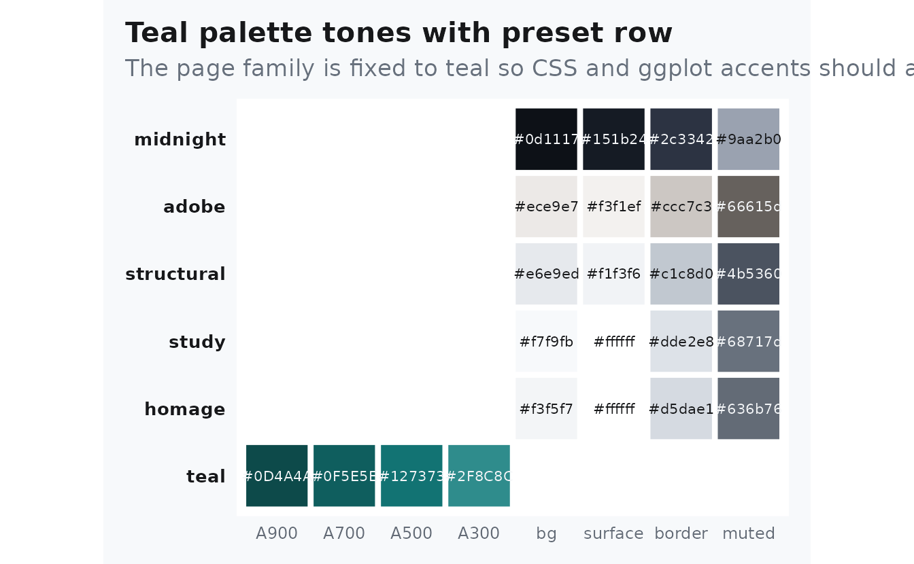
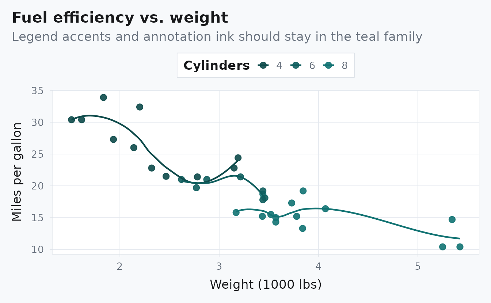

Why This Page Exists
This page is a direct proof vignette: it fixes the family at
teal and the preset at study so readers can
inspect a full article instead of a matrix or control panel.
The accent should read as teal in links, rules, callouts, and plotted highlights. For a quick contrast check, compare this page against pkgdown.
The point is not variety inside one page. The point is one stable combination rendered end to end.
Palette Evidence
albersdown::albers_swatch(families = params$family, show_presets = TRUE) +
ggplot2::labs(
title = "Teal palette tones with preset row",
subtitle = "The page family is fixed to teal so CSS and ggplot accents should agree"
) +
ggplot2::theme(legend.position = "none")
Plot Evidence
mtcars |>
transform(cyl = factor(cyl)) |>
ggplot(aes(wt, mpg, color = cyl)) +
geom_point(size = 2.6, alpha = 0.9) +
geom_smooth(se = FALSE, linewidth = 0.8) +
albersdown::scale_color_albers(family = params$family) +
labs(
title = "Fuel efficiency vs. weight",
subtitle = "Legend accents and annotation ink should stay in the teal family",
x = "Weight (1000 lbs)",
y = "Miles per gallon",
color = "Cylinders"
)
Table Evidence
knitr::kable(
head(mtcars[, c("mpg", "wt", "hp", "qsec")], 6),
digits = 1,
caption = "A simple table to inspect rules, spacing, and code-adjacent typography."
)| mpg | wt | hp | qsec | |
|---|---|---|---|---|
| Mazda RX4 | 21.0 | 2.6 | 110 | 16.5 |
| Mazda RX4 Wag | 21.0 | 2.9 | 110 | 17.0 |
| Datsun 710 | 22.8 | 2.3 | 93 | 18.6 |
| Hornet 4 Drive | 21.4 | 3.2 | 110 | 19.4 |
| Hornet Sportabout | 18.7 | 3.4 | 175 | 17.0 |
| Valiant | 18.1 | 3.5 | 105 | 20.2 |